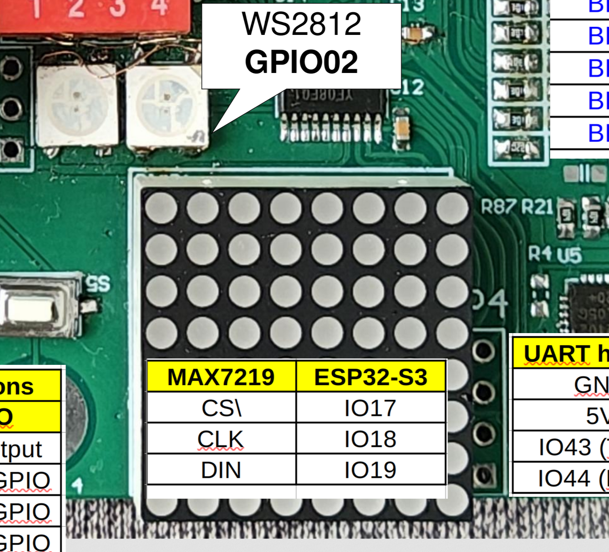
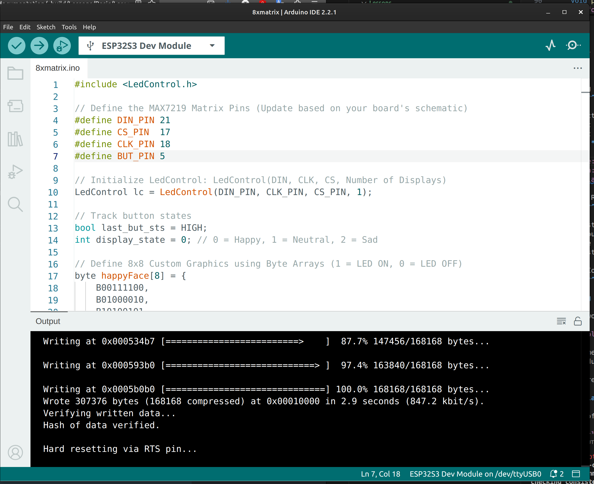

Project 5 : Control an 8x8 LED Matrix Display using a Button#
Introduction#
In this project, we will learn how to control an 8x8 LED Matrix display using the integrated MAX7219 LED driver chip. Controlling 64 individual LEDs normally requires a massive amount of microcontroller pins, but the MAX7219 allows us to control the entire matrix using just 3 digital communication pins.
We will use our button edge-detection logic to cycle through three different pixel-art expressions (Happy, Neutral, and Sad) on the matrix with each press.
By the end of this tutorial, you will know how to:
Interface with the MAX7219 LED driver using a library.
Represent visual graphics as binary data arrays.
Cycle through multiple display states using a single button event.
Requirements#
Before starting, make sure you have the following:
The STEAM development kit or The STEAM standalone microcontroller board
USB cable
Arduino IDE with ESP32 toolchain installed
LedControl library installed (Go to Tools → Manage Libraries, search for “LedControl” by Eberhard Fahle, and install it).
In this project, the built-in 8x8 LED Matrix and button will be used. No external components are required.
{kind=link}

The interfacing description of the 8x8 matrix#
The built-in button is on GPIO0. The MAX7219 driver typically uses three pins: Data In (DIN), Clock (CLK), and Chip Select (CS).
Note
Check your specific STEAM board documentation for the exact GPIO pin numbers assigned to the matrix DIN, CLK, and CS pins and update the code macros below if necessary.
Writing the Program#
Create a new sketch in the Arduino IDE and enter the following code:
#include <LedControl.h>
// Define the MAX7219 Matrix Pins (Update based on your board's schematic)
#define DIN_PIN 11
#define CS_PIN 10
#define CLK_PIN 12
#define BUT_PIN 0
// Initialize LedControl: LedControl(DIN, CLK, CS, Number of Displays)
LedControl lc = LedControl(DIN_PIN, CLK_PIN, CS_PIN, 1);
// Track button states
bool last_but_sts = HIGH;
int display_state = 0; // 0 = Happy, 1 = Neutral, 2 = Sad
// Define 8x8 Custom Graphics using Byte Arrays (1 = LED ON, 0 = LED OFF)
byte happyFace[8] = {
B00111100,
B01000010,
B10100101,
B10000001,
B10100101,
B10011001,
B01000010,
B00111100
};
byte neutralFace[8] = {
B00111100,
B01000010,
B10100101,
B10000001,
B10111101,
B10000001,
B01000010,
B00111100
};
byte sadFace[8] = {
B00111100,
B01000010,
B10100101,
B10000001,
B10011001,
B10100101,
B01000010,
B00111100
};
void setup() {
// Wake up the MAX7219 from power-saving/shutdown mode
lc.shutdown(0, false);
// Set brightness intensity (0 is dimmest, 15 is brightest)
lc.setIntensity(0, 4);
// Clear the display screen
lc.clearDisplay(0);
// Configure the button pin
pinMode(BUT_PIN, INPUT);
// Show the initial happy face
drawFace(happyFace);
}
void loop() {
// Read the current state of the active-LOW button
bool current_but_sts = digitalRead(BUT_PIN);
// Detect button press (falling edge: HIGH to LOW transition)
if (last_but_sts == HIGH && current_but_sts == LOW) {
// Move to the next face state (0 -> 1 -> 2 -> 0)
display_state = (display_state + 1) % 3;
// Update display based on the new state
if (display_state == 0) {
drawFace(happyFace);
} else if (display_state == 1) {
drawFace(neutralFace);
} else if (display_state == 2) {
drawFace(sadFace);
}
delay(50); // Small debounce delay
}
// Save the state for the next loop iteration
last_but_sts = current_but_sts;
}
// Helper function to render a byte array to the matrix
void drawFace(byte face[]) {
for (int row = 0; row < 8; row++) {
lc.setRow(0, row, face[row]);
}
}
Uploading the Program#
Connect the board to your computer using the USB cable.
Open the Arduino IDE.
Ensure the LedControl library is installed via the Library Manager.
Select your board module and the correct serial port from the Tools menu.
Click the Upload button.

Expected Result#
After uploading the program:
The 8x8 LED Matrix will immediately display a smiling face emoji.
Press the push button once; the smile transforms into a flat, neutral expression.
Press the button a second time; the expression changes to a sad face.
Pressing it a third time cycles the loop back, returning the display to a happy face.

How the Code Works#
Understanding Byte Arrays for Graphics
An 8x8 matrix consists of 8 rows and 8 columns. We represent this grid using an array of 8 bytes. Because a single byte consists of 8 bits, each bit matches perfectly with an individual LED in that row:
byte happyFace[8] = {
B00111100, // Row 0: Only the middle 4 LEDs are ON
B01000010, // Row 1
...
};
A 1 turns the corresponding pixel ON, while a 0 keeps it OFF. This allows you to paint pixel art directly in text using binary (B) syntax!
The `LedControl` Setup
Inside setup(), we initialize the MAX7219 controller:
lc.shutdown(0, false);
lc.setIntensity(0, 4);
lc.clearDisplay(0);
By default, the MAX7219 boots up in “sleep mode” to save power. shutdown(0, false) wakes up display index 0. We then scale the brightness down to 4 so it doesn’t hurt our eyes, and clear out any random artifact data from the screen.
Cycling States with Modulo Logic
To change faces smoothly without creating massive if-else blocks, we use the modulo operator (%):
display_state = (display_state + 1) % 3;
This neat math trick forces display_state to step forward incrementally, but reset automatically back to 0 whenever it hits 3, creating a clean, perpetual loop.
Experiment#
Create Your Own Icon: Rewrite one of the byte arrays to display a different icon, such as a heart, a checkbox, or an arrow indicator.
Adjust Brightness Dynamically: Modify the logic so that instead of changing faces, pressing the button steps the display brightness (lc.setIntensity) up from 0 to 15, then rolls back to 0.
Summary#
In this tutorial, you learned how to command an 8x8 LED Matrix using a MAX7219 driver chip. You bypassed complex multiplexing wiring by leveraging a dedicated hardware driver and the LedControl library.
Key concepts covered include:
Initializing and configuring external drivers like the MAX7219.
Mapping 2D pixel grids using 1D byte arrays and binary literals.
Utilizing helper functions (drawFace) to keep loops highly organized.
Using mathematical constraints (the modulo operator) to loop sequence indexes cleanly.